|
The Conda-Forge Autotick Bot is a xonsh-powered system for updating conda-forge feedstocks. The bot (as it is sometimes called) delevers pull requests with new versions of software so maintainers don't need to scouer the internet looking for versions. The Bot also keeps conda-forge compatible by updating packages when new binaries are available. | |
 |
Rever is a xonsh-powered, cross-platform software release tool. The goal of rever is to provide sofware projects a standard mechanism for dealing with code released. Rever aims to make the process of releasing a new version of a code base as easy as running a single command. Rever …
|
|  |
Conda-Press is a xonsh-powered tool that creates Python wheels from conda packages that are pip-installable anywhere (i.e. outside of a conda environment). |
|
Regolith is a content management system for research groups. Regolith creates and manages a database of people, publictaions, projects, proposals & grants, courses, and more! From this database, regolith is then able to
| |
|
Conda-Mirror is a tool to mirror conda repositories to a local directory. |